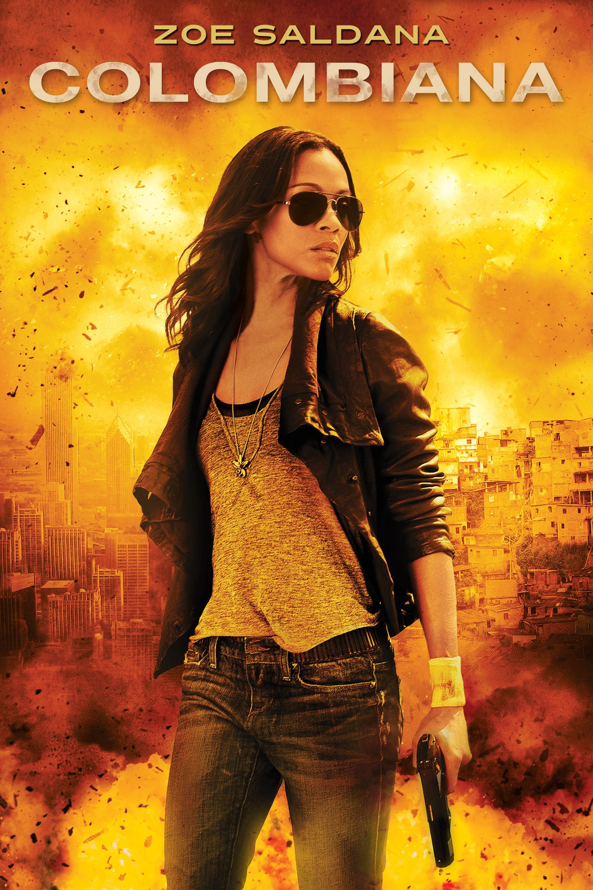
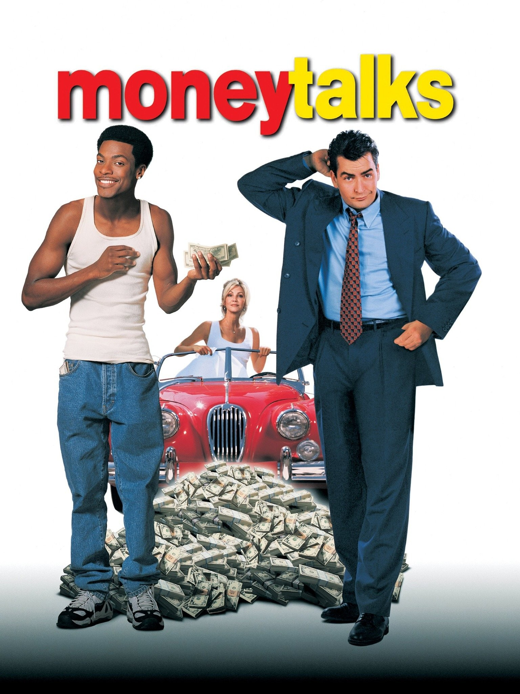
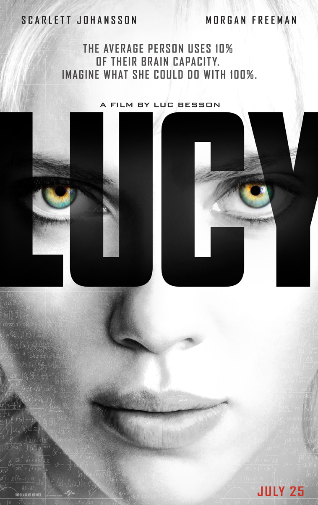
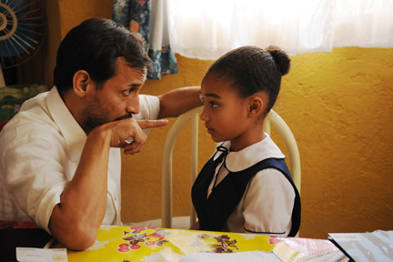
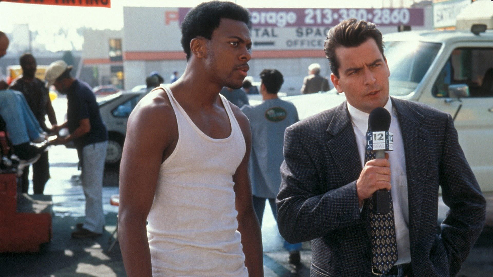
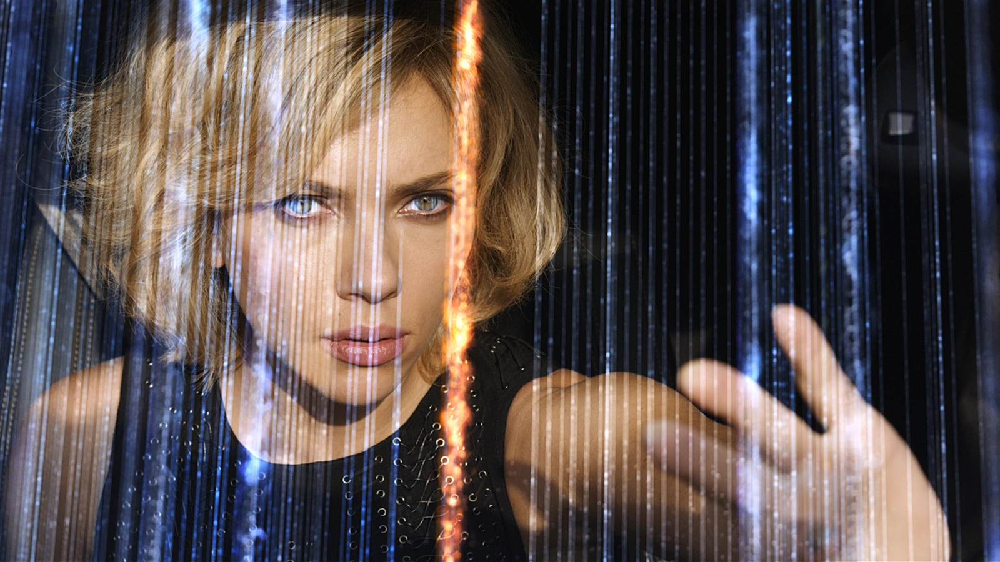

In 1992, in Bogota, Colombia, drug baron Don Luis Sandoval sends his enforcer Marco and a gang of armed men to kill his gang member Fabio Restrepo and his family because Fabio has defied him by trying to leave his prolific drug crime activity behind. Fabio gives his nine-year-old daughter, Cataleya, a SmartMedia computer memory card loaded with information on Don Luis' business and tells her it's her "passport"; he also gives her the address of her uncle Emilio in Chicago, Illinois, who will take care of her. Finally, he leaves her with her mother's cataleya orchid necklace. After Fabio and his wife Alicia are gunned down, Cataleya escapes and seeks asylum at the U.S. Embassy. She is granted passage to the United States after handing over the memory card to embassy staff. Although American officials attempt to transfer her into the foster care system, Cataleya tracks down her uncle in Chicago and asks him to train her as a killer.

Money Talks (1997) is an action-comedy about Franklin Hatchett (Chris Tucker), a small-time hustler who, while being transported to jail, is framed for a violent prison break and forced to go on the run. He teams up with a TV newsman (Charlie Sheen) to prove his innocence, leading to a comedic chase for stolen diamonds.

Lucy (2014) is an action-sci-fi film about a woman (Scarlett Johansson) forced into drug trafficking who gains superhuman abilities—telekinesis, telepathy, and pain control—when an experimental drug leaks into her system. She seeks to unlock 100% of her brain capacity with the help of a professor (Morgan Freeman) while battling her captors.